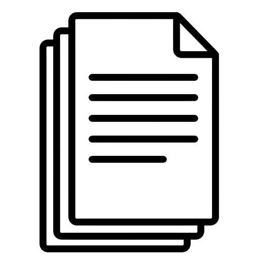
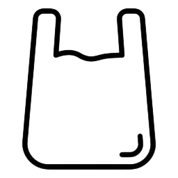
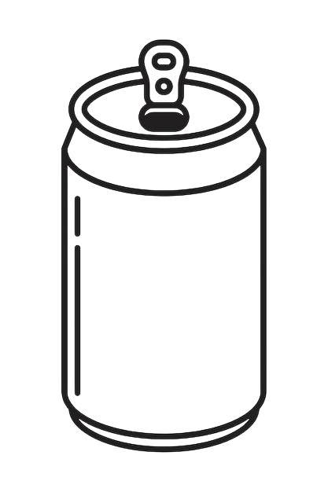
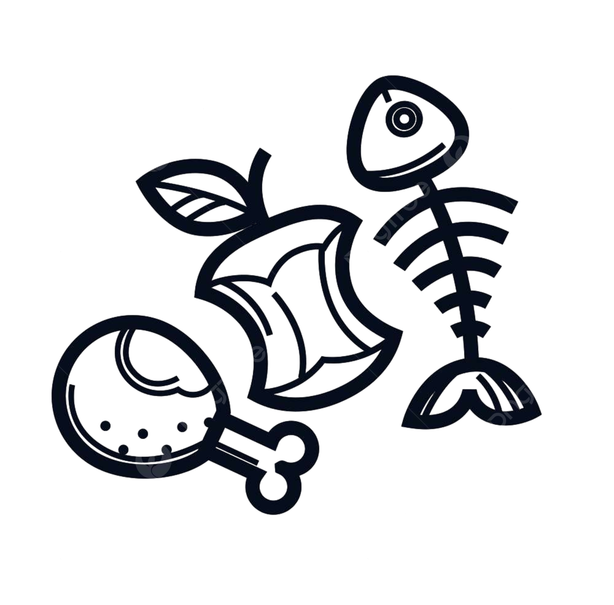

PAPEL
- Remova clipes, grampos e fitas adesivas
- Não recicle papel sujo ou engordurado
- Dobre caixas para economizar espaço

PLÁSTICO
- Lave as embalagens para remover resíduos
- Retire tampas e rótulos quando possível
- Amasse garrafas para reduzir volume

METAL
- Lave latas antes de descartar
- Amasse latas de alumínio para economizar espaço
- Separe metais ferrosos e não ferrosos
VIDRO
- Lave frascos e remova rótulos
- Não recicle vidros temperados ou espelhos
- Separe por cores quando possível

ELETRÔNICOS
- Descarte em locais especializados
- Remova baterias e descarte separadamente
- Considere doar equipamentos funcionais

ORGÂNICOS
- Composte restos de alimentos
- Não misture com materiais recicláveis
- Use sacos compostáveis para coleta